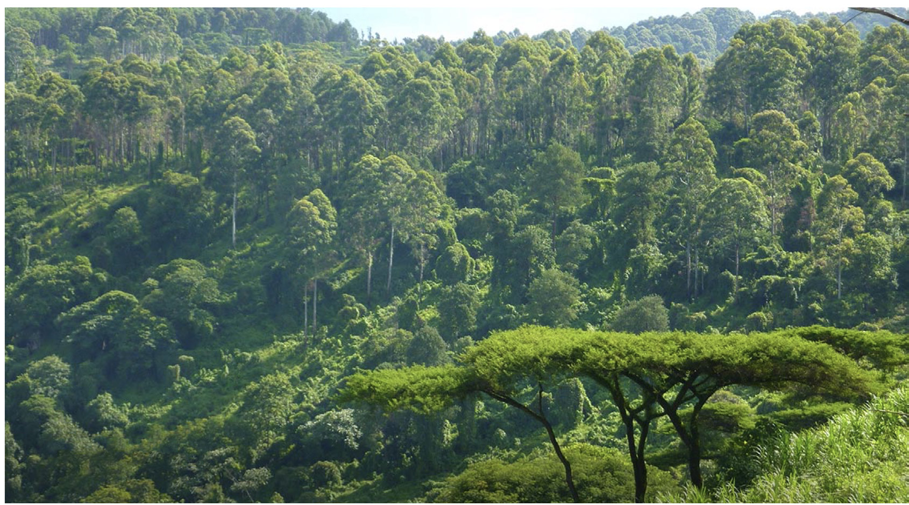
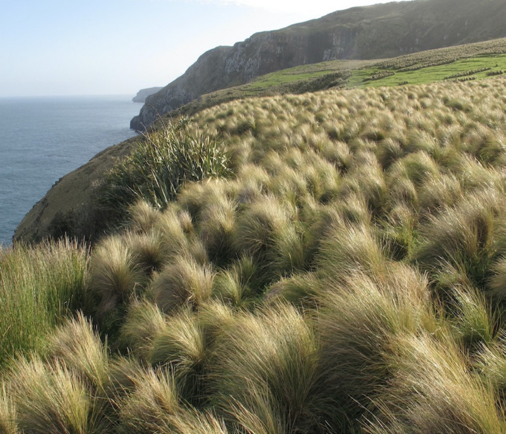
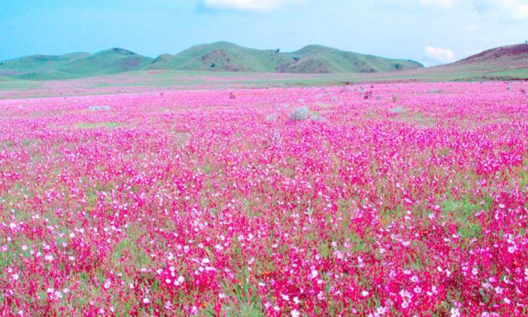

parks or game reserves. These include natural forests of Uluguru, Usambara, Udzungwa, Gombe, Selous, and Rubondo.

Grasslands
Grassland vegetation refers to a type of vegetation dominated by grasses. It also includes other herbaceous plants. In grassland vegetation, trees and shrubs are relatively sparse or absent. Grasslands vegetation is widespread, it is found on every continent including Antarctica where tussock grass may be found (Figure 4.13). In Tanzania three major grasslands are Serengeti plains, Kitulo grassland, and Maasai steppe. Serengeti plains and Maasai steppe are famous for wildlife, while Kitulo grassland is famously known as the Serengeti of flowers.


59